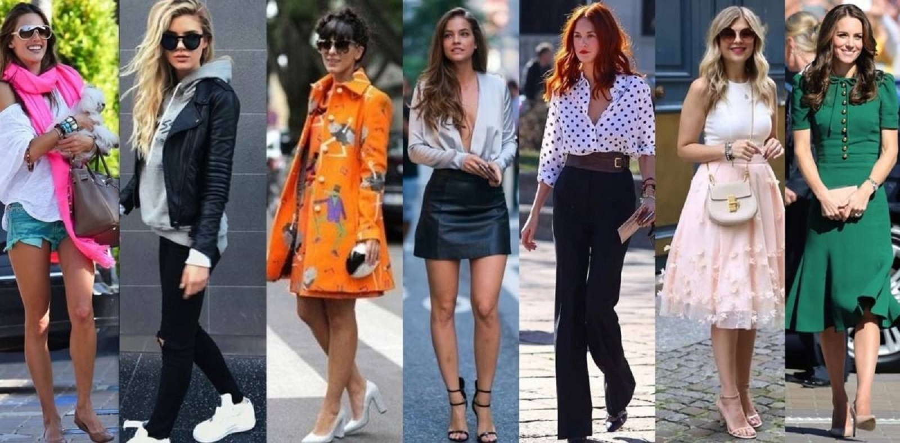

As tendências da Moda são estilos, cores e peças de roupa que se tornam populares durante um determinado período de tempo. A moda está sempre a evoluir e é influenciada por designers, celebridades, redes sociais, música e diferentes culturas. Cada pessoa pode adaptar as tendências ao seu prórpio estilo.
Os acessórios são importantes porque ajudam a completar um conjunto de roupa. Podem acrescentar cor, criatividade e personalidade a um look.

| Marca | Tipo de moda |
|---|---|
| Zara | Moda casual e elegante |
| Nike | Moda desportiva |
| Adidas | Moda desportiva |
| Chanel | Moda elegante e sofisticada |
A moda existe há muitos séculos e foi mudando ao longo da história.Antigamente, as roupas eram utilizadas para proteger o corpo e também para mostrar a posição social. Atualmente, a moda é uma indústria mundial que envolve designers, modelos, fotógrafos e muitas outras profissões. A criatividade e a inovação são fundamentais neste mundo.
Se quisres voltar ao início do nosso site, clica na seguinte hiperligação.
Voltar à página principal